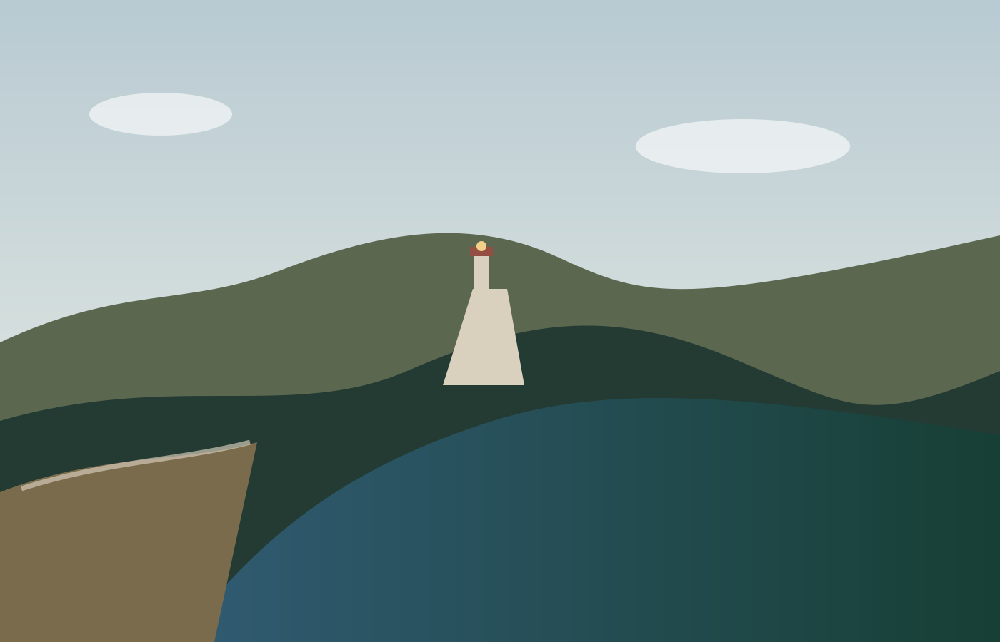
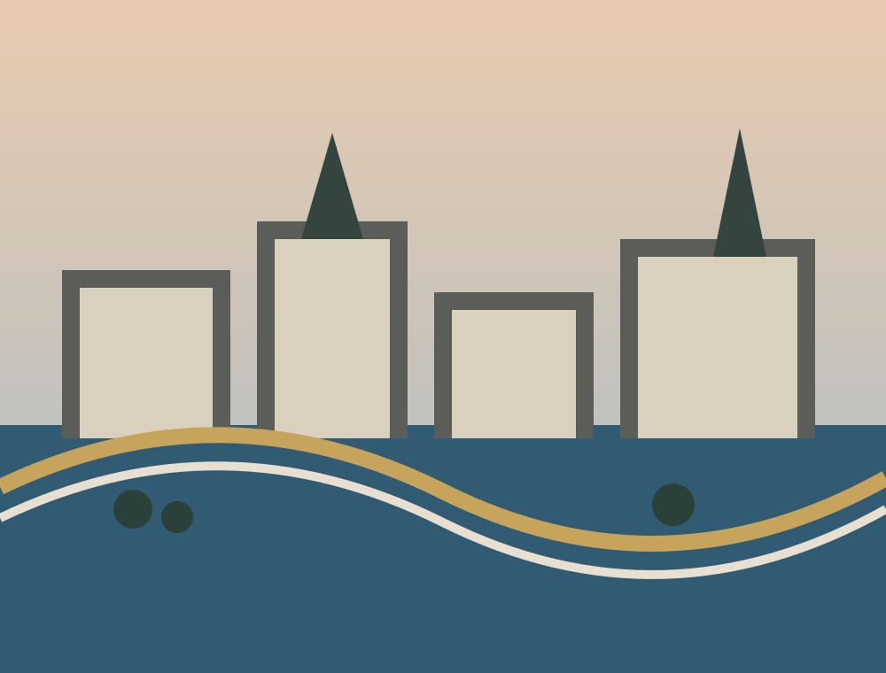
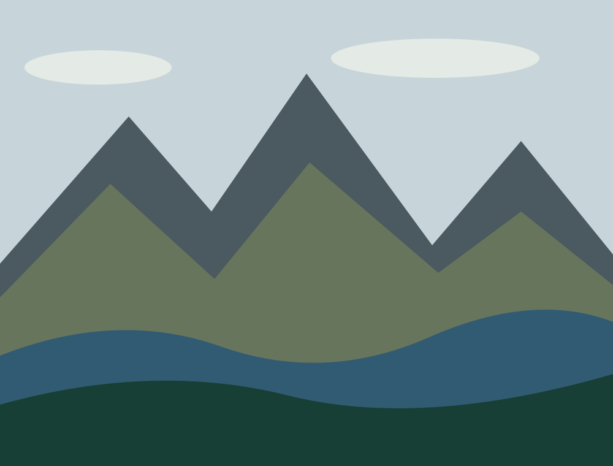
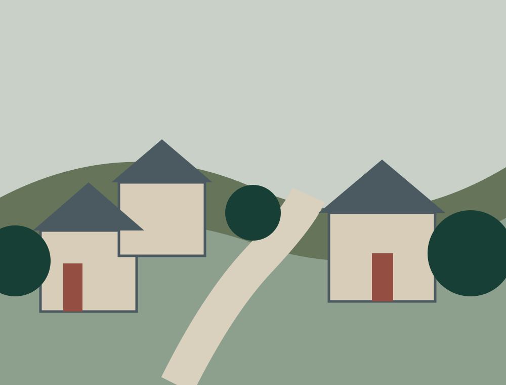
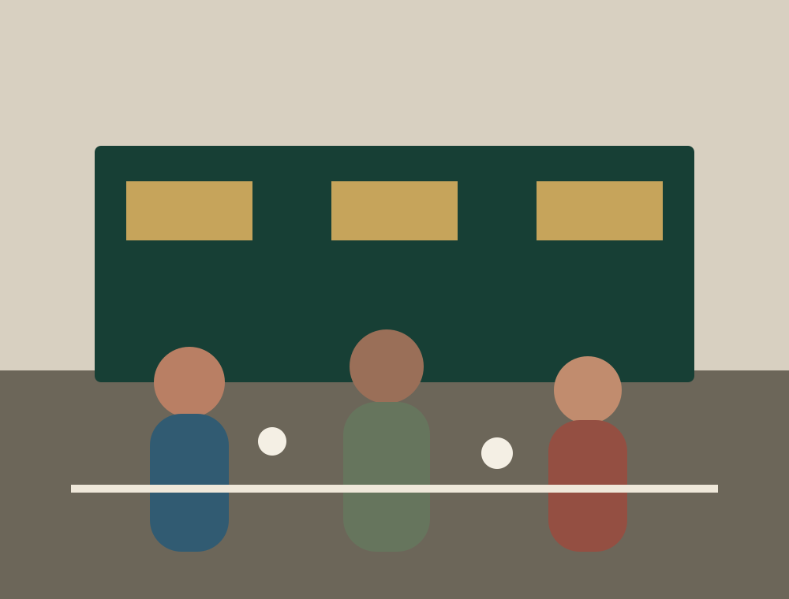
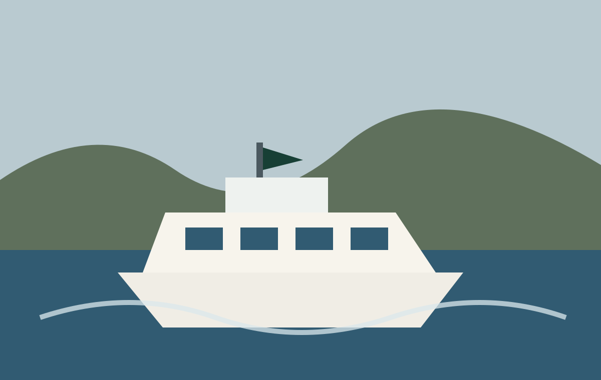
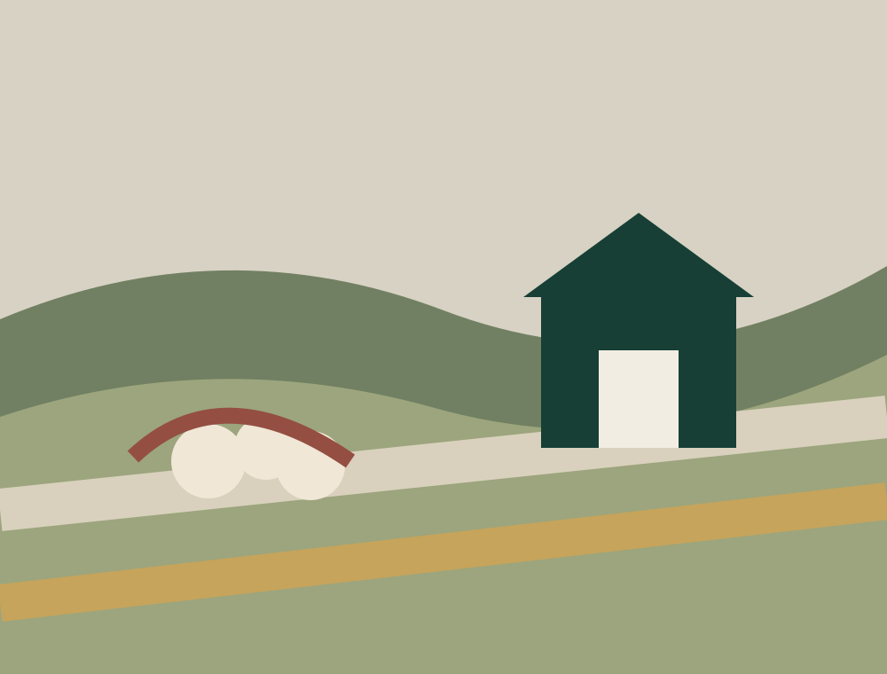
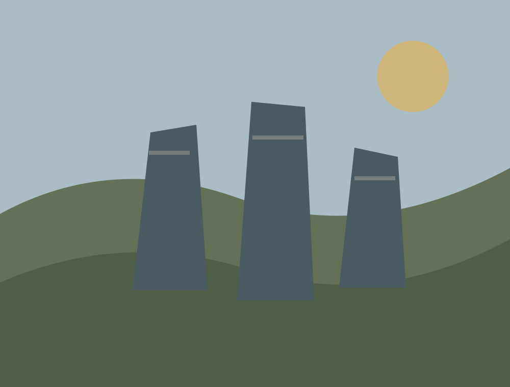
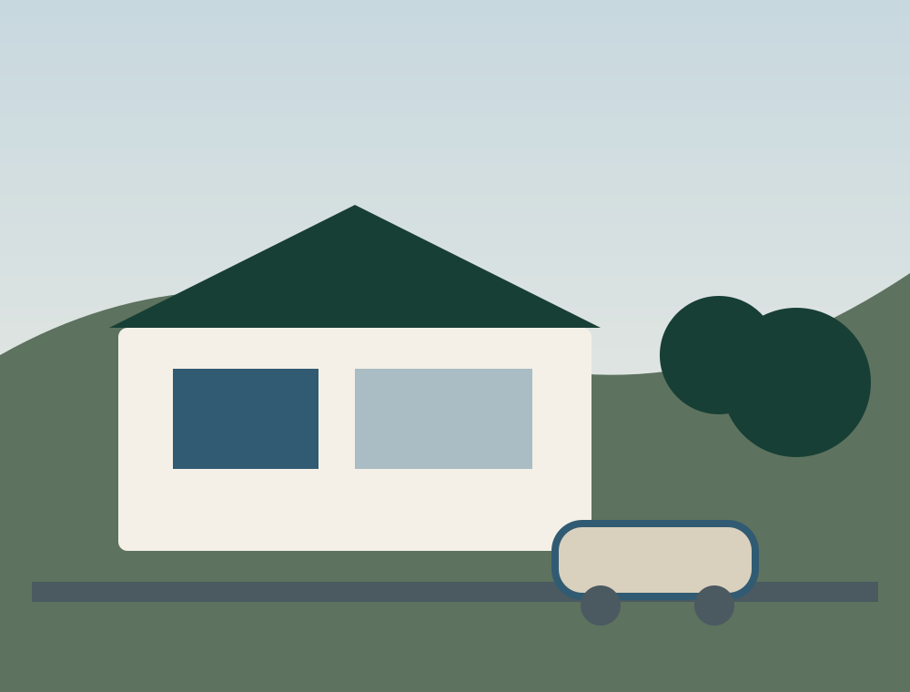

Public life
How does Aldernia work?
Crown, Assembly, Government, evidence and the institutions that are expected to explain themselves.

People · places · public life
An island country of coasts, cities, public life and ordinary Tuesdays.
Fictional country. Participatory editorial world.
Now in Aldernia
London time
Europe/London civil time · current day in Aldernia
A country, not a diagram
Sea and stone. Capital streets and small towns. Work, food, public institutions, ferries, weather and the people who make an ordinary day worth noticing.

CapitalSt Aurelia · Crown and river
LandscapesMountains, forests and water
Towns & villagesLocal, resilient, lived-in
PeopleWork, conversation and community
ConnectionsFerries, rail and the water between places GovernanceService, scrutiny and public explanation
Work & landSkills, food and useful industry
HistoryDeep roots, living memory
TomorrowLearning, research and what comes nextToday in Aldernia
What is happening now and next across the fictional country, from public life to ordinary days. A quiet day is allowed to stay quiet.
Open Today for the current public-fictional calendar.
Three ways further in
Public life
Crown, Assembly, Government, evidence and the institutions that are expected to explain themselves.
Ordinary life
Work, schools, cafés, worship, sport, culture, community and the shape of an unremarkable Tuesday.
Place
Seven regions, principal cities, mountains, rivers, ports, rail and the ferries that make island geography practical.
Aldernian character
Old enough to remember things; modern enough to repair them. Aldernia is maritime, green, human and only as ceremonial as the occasion requires.
It should feel like a country people actually use: harbours still work, public buildings have doors, cafés have queues and the weather is occasionally allowed to win.
Behind the country
The fictional country sits in front of a real project: one person testing whether a general-purpose language model can do useful work inside human-designed records, boundaries, checks and correction.